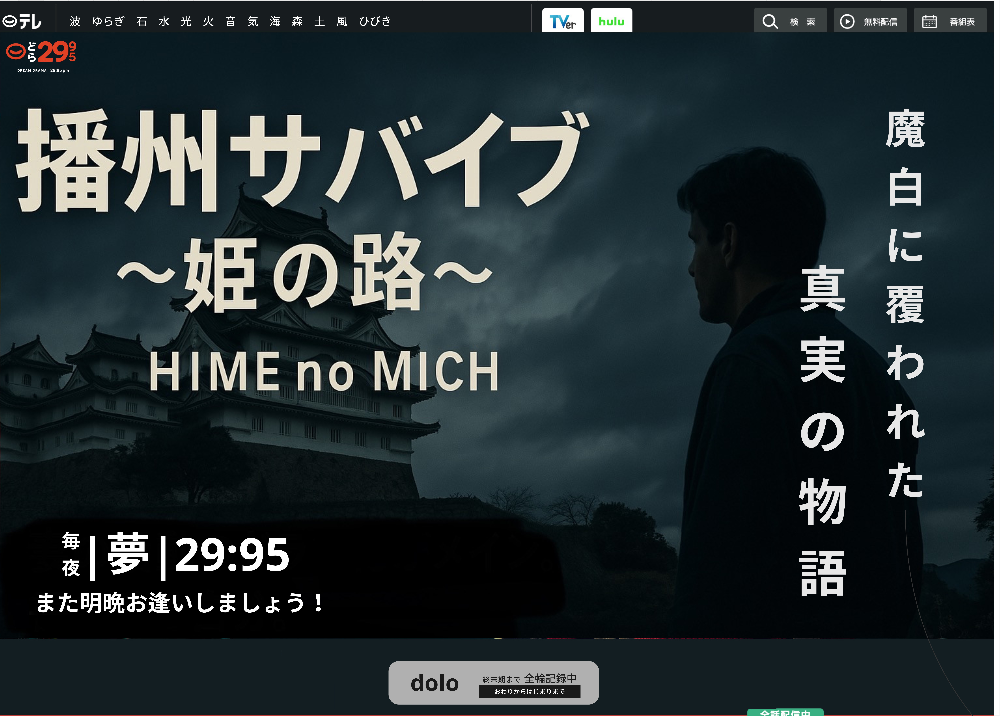

最新情報
NEWS
チャットルーム Chat Room
優夏： 今日もヒメジは晴れとるで〜
柳楽： フラワータウンで朝市やってたな。
/* チャットルームセクション */
.chat-room {
background-color: #fffef5;
border-top: 4px double #aaa;
padding: 2rem 1rem;
font-family: 'Hiragino Kaku Gothic ProN', Meiryo, sans-serif;
}
.chat-room .section-title {
text-align: center;
font-size: 1.6rem;
margin-bottom: 1rem;
color: #333;
}
.chat-box {
max-width: 600px;
margin: 0 auto;
background: #fff;
border: 2px solid #ddd;
border-radius: 8px;
padding: 1rem;
box-shadow: 2px 2px 5px rgba(0,0,0,0.1);
}
.messages {
max-height: 200px;
overflow-y: auto;
margin-bottom: 1rem;
padding-right: 0.5rem;
font-size: 0.95rem;
}
.messages p {
margin: 0.5rem 0;
}
.chat-form {
display: flex;
flex-direction: column;
gap: 0.5rem;
}
.chat-form input[type="text"] {
padding: 0.5rem;
border: 1px solid #ccc;
border-radius: 4px;
font-size: 1rem;
}
.chat-form button {
align-self: flex-end;
background-color: #ffe600;
color: #000;
border: none;
padding: 0.5rem 1rem;
font-weight: bold;
border-radius: 4px;
cursor: pointer;
transition: background-color 0.2s;
}
.chat-form button:hover {
background-color: #ffda00;
}